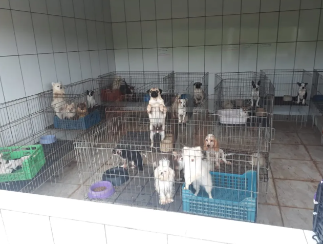
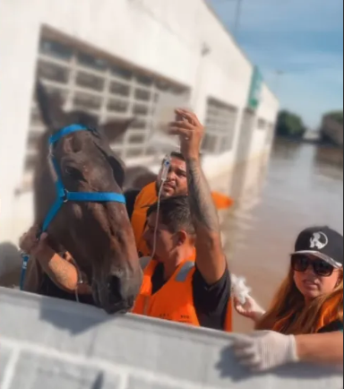

G1
"A Justiça condenou a dona de um canilpor maus-tratos a 1.708 cachorros. Os animais foram resgatados pelo Instituto Luisa Mell em fevereiro de 2019."
Resgates Marcantes do Instituto Luisa Mell
O Instituto Luisa Mell já realizou milhares de resgates ao longo dos anos, salvando animais de situações de extrema vulnerabilidade, abandono e maus-tratos. Cada resgate é uma história de superação, amor e esperança. Separamos alguns dos resgates mais marcantes que emocionaram a todos e mostraram a importância do trabalho do instituto.
Conheça +

Revista Quem
"Luisa Mell passou uma semana intensa nos resgastes de animais atingidos pelas enchentes que assolam o Rio Grande do Sul desde o início de maio."